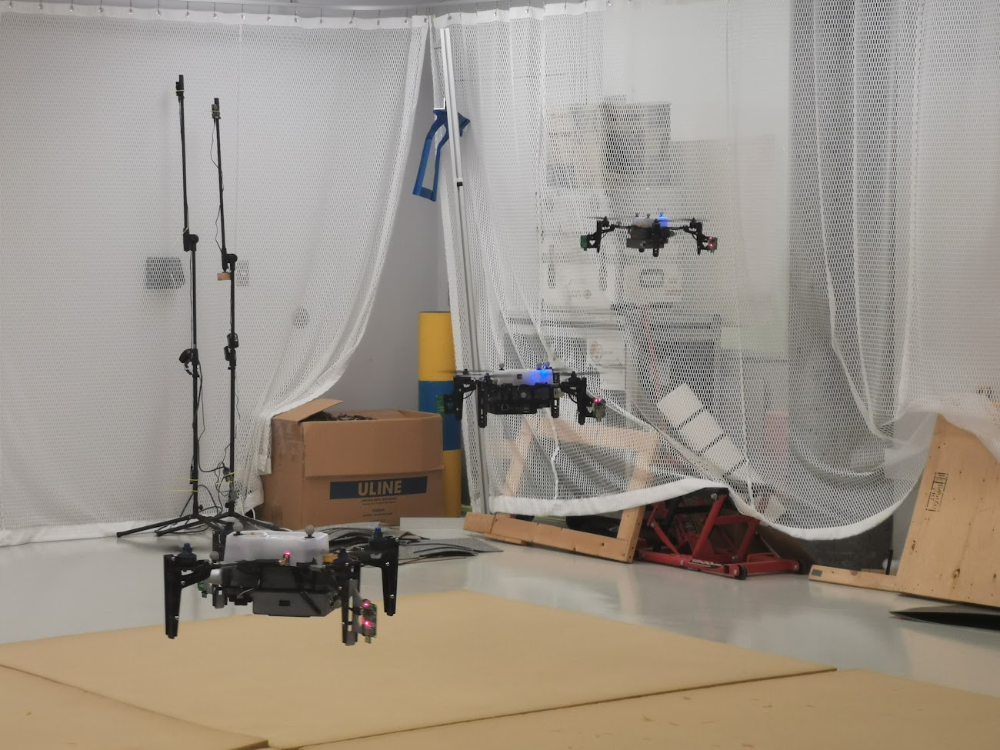
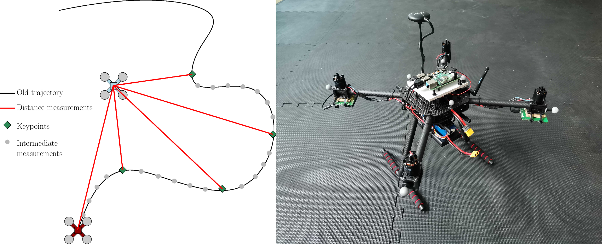
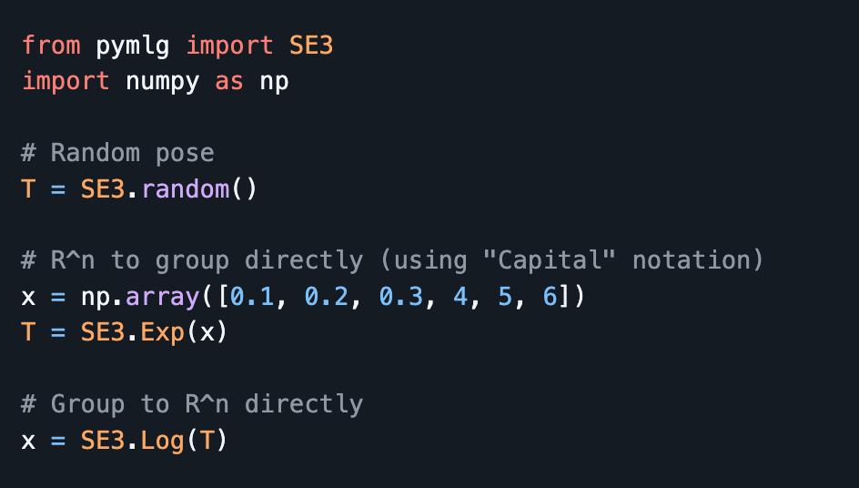

I am currently a Software Engineer at Zoox, where I work on the autonomous vehicle's collision avoidance system.
I previously completed my Ph.D. in Robotics with the DECAR Group at McGill university, under the supervision of James Forbes and David Saussié.
At Zoox, I'm currently developing algorithms that predict the motion of other agents/objects around the vehicle, and to correspondingly compute collision probabilities. During my PhD, our research focused on planning, estimation, and control algorithms for multi-robot teams. We specifically researched how to best use ultra-wideband radio to enable collaboration between robots.
Some things I've done


